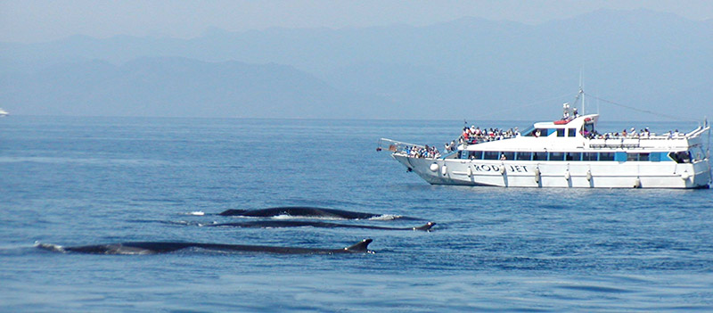
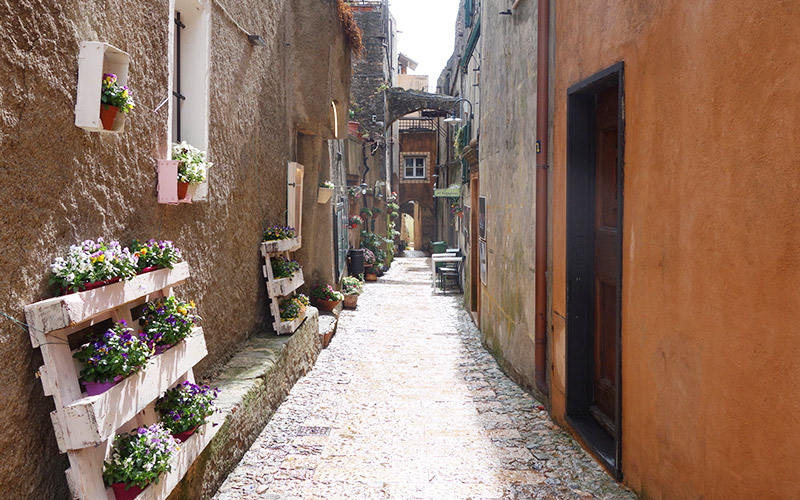
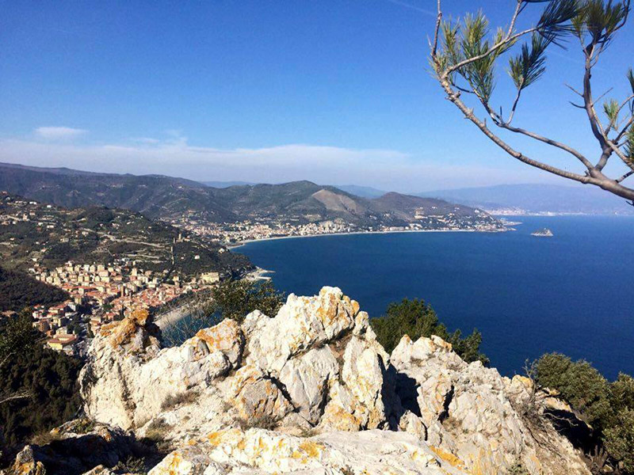
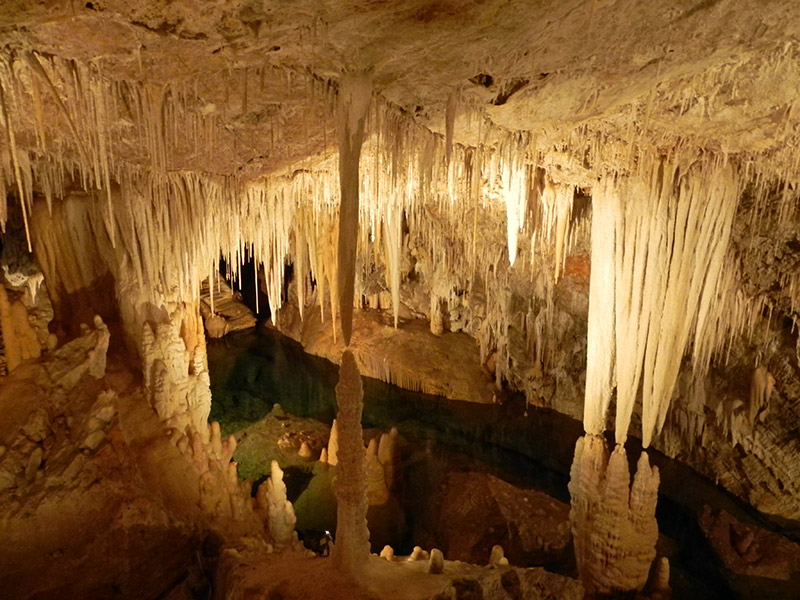
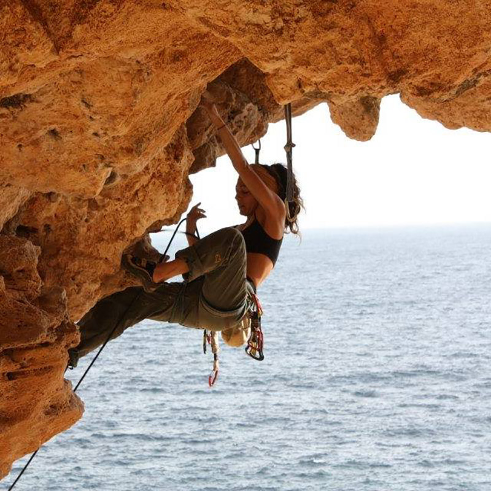

<!DOCTYPE html>
<html>
  <head>
    <meta name="viewport" content="width=device-width, initial-scale=1.0">
    <meta charset="utf-8">
    <title>Villa Paradiso</title>
    <link href="../assets/css/normalize-min.css" rel="stylesheet">
    <link href="../assets/css/styles.css" rel="stylesheet">
    <link href="https://fonts.googleapis.com/css?family=Josefin+Slab|Open+Sans|Pinyon+Script" rel="stylesheet">
  </head>
</html>
<div class="header"><a class="logo" href="index.html">
    <h1>Villa Paradiso</h1></a>
  <div class="hamburger-icon">
    <div class="bar"></div>
    <div class="bar"></div>
    <div class="bar"></div>
  </div>
  <ul class="main-nav">
    <li><a href="/de/rooms.html">BED AND BREAKFAST</a></li>
    <li> <a href="/de/surroundings.html">UMGEBUNG</a></li>
    <li> <a href="/de/garden.html">GARTEN</a></li>
    <li> <a href="/de/prices.html">PREISE</a></li>
    <li> <a href="/de/contact.html">KONTACTE</a></li>
  </ul>
  <ul class="language-picker"><a href="/de/index.html">
      <li></li></a><a href="/fr/index.html">
      <li></li></a><a href="/en/index.html">
      <li> </li></a><a href="/index.html">
      <li></li></a></ul>
</div>
<div class="header-white-fill"></div>
<div class="page-wrapper pages-wrapper">
  <section class="pages-hero-wrapper">
    <div class="page-section-text pages-hero">
      <h2>Ausflüge, Besichtigungen </br> und Sehenswertes</h2>
      <p>Villa Paradiso ist der optimale Startpunkt um zum Strand zu gehen.</p>
    </div>
  </section>
  <aside class="surroundings-aside">
    <h2>Quick Page links</h2>
    <ul>
      <li><a class="smoothscrolllink" href="#">Das Meer</a></li>
      <li><a class="smoothscrolllink" href="#">Radsport</a></li>
      <li><a class="smoothscrolllink" href="#">Klippen/Trekking</a></li>
      <li><a class="smoothscrolllink" href="#">Verezzi</a></li>
      <li><a class="smoothscrolllink" href="#">Final Borgo</a></li>
      <li><a class="smoothscrolllink" href="#">Sentiero del Pellegrino</a></li>
      <h2>Useful Local links</h2>
      <ul>
        <li><a href="http://societa.verezzi.it/" target="_blank">Antica Societa Pizzeria</a></li>
        <li><a href="http://www.festivalverezzi.it/" target="_blank">Festival Teatrale di Borgio Verezzi</a></li>
        <li><a href="http://www.grottediborgio.it/" target="_blank">Grotte di Borgio Verezzi </a></li>
        <li><a href="http://www.comuneborgioverezzi.gov.it/" target="_blank">Comune di Borgio Verezzi</a></li>
        <li><a href="http://turismo.comunefinaleligure.it/en/outdoor" target="_blank">Outdoor Activities in Finale</a></li>
        <li><a href="http://borgioverezzisentieri.altervista.org/" target="_blank">Borgio Verezzi Information</a></li>
      </ul>
    </ul>
  </aside>
  <div class="surroundings-wrapper">
    <section id="sea">
      <h2>Die Umgebung</h2>
      <p>Meer zu genießen, zum Schnorcheln oder um einen Ausflug mit dem Boot zu machen, auf der Spur nach Delphinen und Wahlen indem Santuario dei Cetacei. Wir empfehlen Ihnen gerne die besten privaten, freien oder hundefreundlichen Strände. </p>
    </section>
    <section id="verezzi">
      <p>Sie möchten lieber in der Natur und in den Bergen wandern? Kein Problem, auch das ist bei uns möglich. Ihnen bietet sich die Möglichkeit typische italienische Altstädte zu besuchen, wie z.B. die von Genua, eine wichtige Hafenstadt, die nur eine Stunde von Villa Paradiso entfernt ist. Länger brauchen Sie auch nicht um die Côte d'Azur in Frankreich zu erreichen, dort können Sie das mondäne Leben des Fürstentums Monacos genießen und die Lebhaftigkeit Nizzas erfahren oder beides zu einem perfekten Tagesausflug verbinden.</p>
    </section>
    <section id="finalborgo">
      <p>Finalborgo mit dem intakten mittelalterlichem Gemäuer und die kleinen Handwerksläden, sowie die Sportlertreffpunkte und charakteristischen Restaurants ist immer einen Besuch wert. Varigotti mit den malerischen bunten Häusern, die direkt am Sand gebaut wurden, zählt zu den namhaftesten Stränden Italiens zusammen mit der angrenzenden Baia dei Saraceni und der Spiaggia del Malpasso.</p>
    </section>
    <section id="pellegrinotrail">
      <p>Dort können Sie eine der schönsten Wanderungen aus landschaftlicher und historischer Sicht unternehmen, der Sentiero del Pellegrino der Varigotti und Noli miteinander verbindet. Vom cap  Noli aus können sie die Sicht auf das Meer genießen und an einem klaren Tag sogar Korsika erblicken oder die berühmten Marmorbrüche von Carrara.</p>
    </section>
    <section id="climbinghiking">
      <p>Zusätzlich zu Verezzi und Finalborgo zählt die antica Repubblica marinara di Noli zu den schönsten Altstädten Italiens, mit den altertümlichen Türmen und Bögen ist Noli eine Perle der Riviera.</p>
      <p>Falls Sie direkt von der Haustür aus loswandern möchten, gibt es zahlreiche Möglichkeiten ohne das Auto. Alleine in Borgio Verezzi gibt es zahlreiche kulturelle, historische, geologische und Naturwanderwege. Entdecken sie die vielfältige Flora oder archeologische Fundstücke.</p>
      <p>Weg der Borgio Verezzi und Finale Ligure auch heute noch miteinander verbindet. Für Kinder und Erwachsene geeignet sind die Grotten von Borgio Verezzi, die buntesten Grotten Italiens, sowie die Höhlen von Toirano – wo sich prähistorische Funde befinden. Weitere Funde können im sehenswerten Museo archeologico del Finale besichtigt werden. </p>
      <p>In 2017 fand in Finale Ligure das Internationale Treffen der Höhlenforschung statt.</p>
    </section>
    <section id="cycling"> 
      <p>Villa Paradiso befindet sich wenige Kilometer von den Autobahnausfahrt A10 von Finale Ligure entfernt. In der für Outdoorsport bekannten Ortschaft ist es möglich Radsport oder Mountain Biking zu betreiben, darüber hinaus gibt es einen Shuttlebus Service für Downhill Fans sowie die Möglichkeit Bikes zu mieten und MTB Schulen zu besuchen. Finale Ligure ist Gastgeber für die WEMBO Weltmeisterschaft, der 24 Hours Mountainbike Championship, sowie den European Solo 24H MTB und die Enduro World Series.</p>
      <p>Die Berge im Umland von Finale Ligure sind für die herrlichen Buchenwälder, aber auch für die Klippen und Kletterwände bekannt, die Climber Fans aus ganz Europa begeistern. Finalborgo beherbergt seit einigen Jahren das Event Finale for Nepal, ein wohltätiges sportliches Ereigniss. </p>
      <p>Die Ligurische Riviera ist auch bekannt für die zahlreichen Wettläufe, wie Triathlon, Trail, Enduro und Cross. Seit 1907 dient sie als Bühne für einen der wichtigsten Rennradwettkämpfe Italiens, der Milano-Sanremo.</p>
      <p>Wir kennen die Riviera und die Produkte unserer Region und beraten Sie gerne in jeder Angelegenheit. Brauchen Sie eine Empfehlung zum Kauf von naturreinem Olivenöl oder den für Ligurien typischen Pesto, so können wir Ihnen die besten örtlichen Betriebe empfehlen. Sind Sie auf der Suche nach Pigato, Rossese und Vermentino fragen Sie uns nach den lokalen Winzern. Vor allem können wir Ihnen Restaurants, Gaststätten oder die schönsten Bars für einen Aperitivo empfehlen, die wir selber auch gerne besuchen. Wir informieren unsere Gäste auf Wunsch gerne über aktuelle Events, Märkte und Volksfeste während Ihres Besuches. </p>
    </section>
  </div>
  <footer class="body-padding-footer">
    <div class="flex-wrapper">
      <div class="footer-group">
        <h4>Waehlen deine sprache</h4>
        <ul class="language-picker-footer"><a href="/de/">
            <li></li></a><a href="/fr/">
            <li></li></a><a href="/en/">
            <li> </li></a><a href="/it/">
            <li></li></a></ul>
      </div>
      <div class="footer-group">
        <h4>Mehr erfahren</h4>
        <ul>
          <li><a href="/en/rooms.html">BED AND BREAKFAST</a></li>
          <li> <a href="/en/surroundings.html">UMGEBUNG</a></li>
          <li> <a href="/en/garden.html">GARTEN</a></li>
          <li> <a href="/en/prices.html">PREISE</a></li>
          <li> <a href="/en/contact.html">KONTAKTE</a></li>
        </ul>
      </div>
      <div class="footer-group">
        <h4>Kontakte aufnehmen</h4>
        <p>VILLA PARADISO <br> Via N. Sauro, 172 Borgio Verezzi </p>
        <p>Phone: 019 610622</p>
        <p>Email: villaparadiso@verezzi.it</p>
      </div>
    </div>
    <div class="copyright">
      <p>&copy 2018 Alle Rechte vorbehalten.</p>
    </div>
  </footer>
  <script src="../assets/js/app.js"></script>
</div>